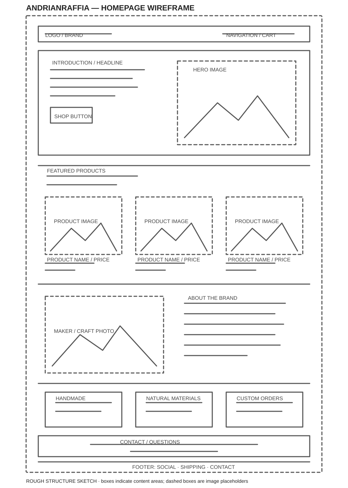
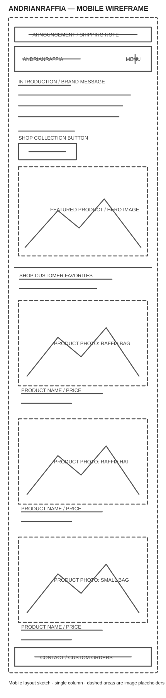

Site name :AndrianRaffia This brand name come from combination of my name with the principal materials that we use for our product. Here in Madagascar, combining two differents name is common and have a lot of signification. For us, AndrianRaffia means create Raffia product by myself if we can give a sense to it.
Site purpose : The website will showcase a collection of handmade products created in Madagascar using raffia, a natural and locally available material. The products will include different types of bags, hats, and baskets. The purpose of the website is to present these traditional and creative products to a wider audience while highlighting the skills and craftsmanship of local artisans.
Scenarios : Do you have raffia products available in different styles, colors, or sizes? How much do your raffia bags and hats cost? Can I order a custom raffia bag or hat? Do you deliver raffia products to my area?
Color Schema: The color scheme uses warm brown, cream, and deep green to reflect the natural beauty of handmade raffia products. - Warm brown connects to the raffia fibers and gives the brand an earthy, grounded feel. - Cream keeps the design light and welcoming, and provides a clear background that lets the products stand out. - Deep green adds a fresh accent inspired by nature. Use it for buttons, headings, or small details to bring contrast without overpowering the brown. Together, these colors create a natural, polished look that suits raffia bags and hats. Warm brown: #8B5E3C Cream: #F5EFE6 Deep green: #355E3B
Typography : Lato is a clean, readable typeface that works well for both headings and body text. Its simple, friendly style complements the natural look of raffia products.
Wireframe

